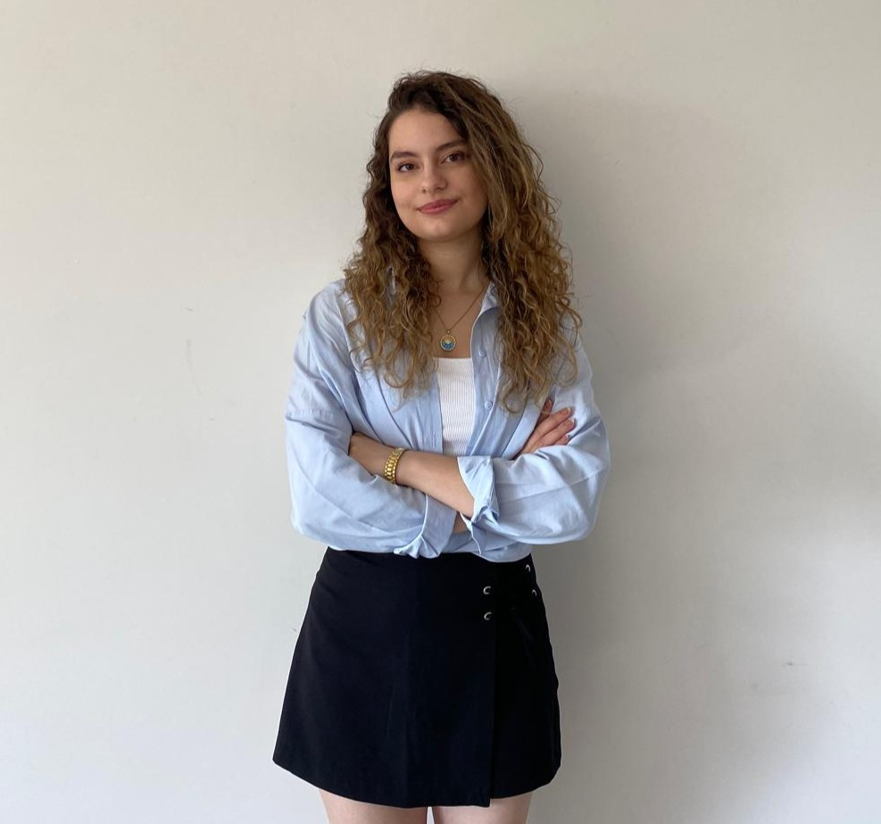

Hakkımda
Hayatım, ilgi alanlarım ve hedeflerim hakkında daha fazla bilgi

Merhaba, Ben Selin
Süleyman Demirel Üniversitesi Bilgisayar Mühendisliği 3. sınıf öğrencisiyim. Yazılım geliştirme ve yeni teknolojilerle ilgileniyor, aynı zamanda okulumuzun Bilgisayar Topluluğu Etkinlik Departmanı’nda yönetim üyesi olarak aktif görev alıyorum. Hem akademik hayatımda hem de topluluk çalışmalarımda edindiğim deneyimlerle kendimi geliştirmeyi, proje üretmeyi ve gelecekte özellikle yapay zeka,Web geliştirme alanında uzmanlaşmayı hedefliyorum.
İlgi Alanlarım
- Web Geliştirme ve Tasarım
- Yapay Zeka
- Seyahat
- Kitap Okuma
Becerilerim
HTML/CSS
C#
Java
Hedeflerim
Gelecekte kullanıcı deneyimi odaklı web uygulamaları geliştirmek ve dijital ürünler tasarlamak istiyorum. Ayrıca, öğrendiklerimi başkalarıyla paylaşmak için içerik üretmeyi planlıyorum.